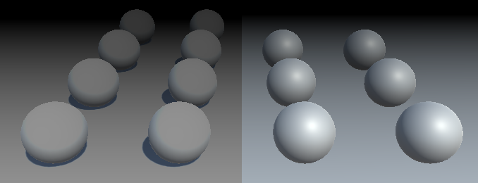

Rendering 14
Fog
- Apply fog to objects.
- Base fog on either distance or depth.
- Create an image effect.
- Support deferred fog.
This is part 14 of a tutorial series about rendering. The previous installment introduced deferred shading. This time we'll add fog to our scene.
This tutorial was made with Unity 5.5.0f3.
Forward Fog
Up to this point, we've always treated light rays as if they traveled through a vacuum. This might be accurate when your scene is set in space, but otherwise light has to travel through an atmosphere or liquid. Under those circumstances, light rays can get absorbed, scattered, and reflected anywhere in space, not only when hitting a solid surface.
An accurate rendering of atmospheric interference would require an expensive volumetric approach, which is something we usually cannot afford. Instead, we'll settle for an approximation which relies on only a few constant fog parameters. It's known as fog, because the effect is typically used for foggy atmospheres. The visual distortions causes by clear atmospheres are usually so subtle that they can be ignored for shorter distances.
Standard Fog
Unity's Lighting window contains a section with the scene's fog settings. It's disabled by default. When activated, you get a default gray fog. However, this only works for objects that are rendered using the forward rendering path. When the deferred mode is active, this is mentioned in the fog section.
We'll deal with deferred mode later. For now, let's focus on forward fog. To do so, we need to use forward rendering mode. You can change the global rendering mode, or force the main camera to use the desired rendering mode. So set the camera's Rendering Path to Forward. Let's also disable HDR rendering for now.
Create a small test scene, like a few spheres on top of a plane or cube. Use Unity's default white material.
With ambient lighting set to its default intensity of 1, you'll get a few very bright objects and no noticeable fog at all.
Linear Fog
To make the fog more noticeable, set its color to solid black. That would represent an atmosphere that absorbs light without much scattering, like thick black smoke.
Set the Fog Mode to Linear. This isn't realistic, but easy to configure. You can set the distance at which the fog's influence begins and where it effectively becomes solid. It increases linearly in between. This is measured in view distance. Before the fog starts, visibility is normal. Beyond that distance, the fog will gradually obscure objects. Beyond the end, nothing but the fog's color is visible.
The linear fog factor is computed with the function `f = (E - c) / (E - S)`, where `c` is the fog coordinate and `S` and `E` and the start and end. This factor is then clamped to the 0–1 range and used to interpolate between the fog and the object's shaded color.
Exponential Fog
The second fog mode that Unity supports is exponential, which is a more realistic approximation of fog. It uses the function `f = 1 / 2^(cd) = 2^(-cd)` where `d` is the fog's density factor. This equation will never reach zero, unlike the linear version. Increase the density to 0.1 to make the fog appear closer to the camera.
Exponential Squared Fog
The last mode is exponential squared fog. This works like exponential fog, but uses the function `f = 1 / 2^((cd)^2) = 2^(-(cd)^2)` which results in less fog at close range, but it increases quicker.
Adding Fog
Now that we know what fog looks like, let's add support for it to our own forward shader. To make comparison easier, set half of the objects to use our own material, while the rest keeps using the default material.
The fog mode is controlled with shader keywords, so we have to add a multi-compile directive to support them. There is a pre-defined multi_compile_fog directive that we can use for this purpose. It results in extra shader variants for the FOG_LINEAR, FOG_EXP, and FOG_EXP2 keywords. Add this directive to the two forward passes only.
#pragma multi_compile_fog
Next, let's add a function to My Lighting to apply the fog to our fragment color. It takes the current color and the interpolators as parameters, and should return the final color with fog applied.
float4 ApplyFog (float4 color, Interpolators i) {
return color;
}
The fog effect is based on the view distance, which is equal to the length of the vector between the camera position and the fragment's world position. We have access to both positions, so we can compute this distance.
float4 ApplyFog (float4 color, Interpolators i) {
float viewDistance = length(_WorldSpaceCameraPos - i.worldPos);
return color;
}
Then we use this as the fog coordinate for the fog density function, which is computed by the UNITY_CALC_FOG_FACTOR_RAW macro. This macro creates the unityFogFactor variable, which we can use to interpolate between the fog and fragment color. The fog color is stored in unity_FogColor, which is defined in ShaderVariables.
float4 ApplyFog (float4 color, Interpolators i) {
float viewDistance = length(_WorldSpaceCameraPos - i.worldPos);
UNITY_CALC_FOG_FACTOR_RAW(viewDistance);
return lerp(unity_FogColor, color, unityFogFactor);
}
As the fog factor can end up outside the 0–1 range, we have to clamp it before interpolating.
return lerp(unity_FogColor, color, saturate(unityFogFactor));
Also, because fog doesn't affect the alpha component, we can leave that out of the interpolation.
color.rgb = lerp(unity_FogColor.rgb, color.rgb, saturate(unityFogFactor)); return color;
Now we can apply the fog to the final forward-pass color in MyFragmentProgram.
#if defined(DEFERRED_PASS) #if !defined(UNITY_HDR_ON) color.rgb = exp2(-color.rgb); #endif output.gBuffer0.rgb = albedo; output.gBuffer0.a = GetOcclusion(i); output.gBuffer1.rgb = specularTint; output.gBuffer1.a = GetSmoothness(i); output.gBuffer2 = float4(i.normal * 0.5 + 0.5, 1); output.gBuffer3 = color; #else output.color = ApplyFog(color, i); #endif
Our own shader now also includes fog. However, it doesn't quite match the fog computed by the standard shader. To make the difference very clear, use linear fog with a start and end that have the same or nearly the same value. This results in a sudden transition from no to total fog.
Depth-Based Fog
The difference between our and the standard shader is due to the way we compute the fog coordinate. While it makes sense to use the world-space view distance, the standard shader uses a different metric. Specifically, it uses the clip-space depth value. As a result, the view angle doesn't affect the fog coordinate. Also, in some cases the distance is affected by the near clip plane distance of the camera, which pushes the fog away a bit.
The advantage of using depth instead of distance is that you don't have to calculate a square root, so it's faster. Also, while less realistic, depth-based fog might be desirable in certain cases, like for side-scrolling games. The downside is that, because view-angles are ignored, the camera orientation influences the fog. As it rotates, the fog density changes, while it logically shouldn't.

Let's add support for depth-based fog to our shader, to match Unity's approach. This requires a few changes to our code. We now have to pass the clip-space depth value to the fragment program. So define a FOG_DEPTH keyword when one of the fog modes is active.
#include "UnityPBSLighting.cginc" #include "AutoLight.cginc" #if defined(FOG_LINEAR) || defined(FOG_EXP) || defined(FOG_EXP2) #define FOG_DEPTH 1 #endif
We have to include an interpolator for the depth value. But instead of giving it a separate interpolator, we can piggyback it on the world position, as its fourth component.
struct Interpolators {
…
#if FOG_DEPTH
float4 worldPos : TEXCOORD4;
#else
float3 worldPos : TEXCOORD4;
#endif
…
}
To make sure that our code remains correct, replace all usage of i.worldPos with i.worldPos.xyz. After that, assign the clip-space depth value to i.worldPos.w in the fragment program, when needed. It's simply the Z coordinate of the homogeneous clip-space position, so before it gets converted to a value in the 0–1 range.
Interpolators MyVertexProgram (VertexData v) {
Interpolators i;
i.pos = UnityObjectToClipPos(v.vertex);
i.worldPos.xyz = mul(unity_ObjectToWorld, v.vertex);
#if FOG_DEPTH
i.worldPos.w = i.pos.z;
#endif
i.normal = UnityObjectToWorldNormal(v.normal);
…
}
In ApplyFog, overwrite the computed view distance with the interpolated depth value. Keep the old computation, as we'll still use it later.
float4 ApplyFog (float4 color, Interpolators i) {
float viewDistance = length(_WorldSpaceCameraPos - i.worldPos.xyz);
#if FOG_DEPTH
viewDistance = i.worldPos.w;
#endif
UNITY_CALC_FOG_FACTOR_RAW(viewDistance);
return lerp(unity_FogColor, color, saturate(unityFogFactor));
}
Now you most likely get the same result as the standard shader. However, in some cases the clip space is configured differently, producing incorrect fog. To compensate for that, use the UNITY_Z_0_FAR_FROM_CLIPSPACE macro to convert the depth value.
viewDistance = UNITY_Z_0_FAR_FROM_CLIPSPACE(i.worldPos.w);
Depth or Distance
So, which metric should we use for our fog? Clip-space depth, or world-space distance? Let's support both! But it's not worth making it a shader-feature. We'll make it a shader configuration option instead, like BINORMAL_PER_FRAGMENT. Let's say that depth-based fog it the default, and you can switch to distance-based fog by defining FOG_DISTANCE, in the CGINCLUDE section near the top of our shader.
CGINCLUDE #define BINORMAL_PER_FRAGMENT #define FOG_DISTANCE ENDCG
All we have to do in My Lighting to switch to distance-based fog, is to get rid of the FOG_DEPTH definition, if FOG_DISTANCE has already been defined.
#if defined(FOG_LINEAR) || defined(FOG_EXP) || defined(FOG_EXP2) #if !defined(FOG_DISTANCE) #define FOG_DEPTH 1 #endif #endif
Disabling Fog
Of course we don't always want to use fog. So only include the fog code when it's actually turned on.
#if defined(FOG_LINEAR) || defined(FOG_EXP) || defined(FOG_EXP2)
#if !defined(FOG_DISTANCE)
#define FOG_DEPTH 1
#endif
#define FOG_ON 1
#endif
…
float4 ApplyFog (float4 color, Interpolators i) {
#if FOG_ON
float viewDistance = length(_WorldSpaceCameraPos - i.worldPos.xyz);
#if FOG_DEPTH
viewDistance = UNITY_Z_0_FAR_FROM_CLIPSPACE(i.worldPos.w);
#endif
UNITY_CALC_FOG_FACTOR_RAW(viewDistance);
color.rgb = lerp(unity_FogColor.rgb, color.rgb, saturate(unityFogFactor));
#endif
return color;
}
Multiple Lights
Our fog works correctly with a single light, but how does it behave when there are multiple lights in the scene? It appears fine when we're using black fog, but try it with another color as well.
The result is too bright. This happens because we're adding the fog color once per light. This wasn't a problem when the fog color was black. So the solution is to always use a black color in the additive pass. That way, the fog fades the contribution of additional lights, without brightening the fog itself.
float3 fogColor = 0; #if defined(FORWARD_BASE_PASS) fogColor = unity_FogColor.rgb; #endif color.rgb = lerp(fogColor, color.rgb, saturate(unityFogFactor));
Deferred Fog
Now that we have fog working for the forward rendering path, let's switch to the deferred path. Duplicate the forward-mode camera. Change the duplicate into a deferred camera, then disable the forward camera. This way, you can quickly switch between rendering modes by changing which camera is enabled.
You'll notice that there is no fog at all when using the deferred rendering path. That's because the fog has to be applied after all lighting has been calculated. So we cannot add fog in the deferred pass of our shader.
To compare deferred and forward rendering in the same image, you can force some of the objects to be rendered in forward mode. For example, by using a transparent material while keeping it fully opaque.
Sure enough, the objects that use a transparent material are affected by the fog.
Image Effects
To add fog to deferred rendering, we have to wait until all lights are rendered, then do another pass to factor in the fog. As the fog applies to the entire scene, it's like rendering a directional light.
A simply way to add such a pass is by adding a custom component to the camera. So create a DeferredFogEffect class than extends MonoBehaviour. Because it's useful to be able to see the fog in edit mode, give it the ExecuteInEditMode attribute. Add this component to our deferred camera. That should eventually make the fog appear in the game view.
using UnityEngine;
[ExecuteInEditMode]
public class DeferredFogEffect : MonoBehaviour {
}
To add an additional full-screen pass to the rendering process, give our component an OnRenderImage method. Unity will check whether the camera has components with this method and invoke them after rendering the scene. This allows you to alter or apply effects to the rendered image. If there are multiple such components, they will be invoked in the order that they're attached to the camera.
The OnRenderImage method has two RenderTexture parameters. The first being the source texture, which contains the final colors of the scene, up to this point. The second parameter is the destination texture that we have to render to. It might be null, which means it goes directly to the frame buffer.
void OnRenderImage (RenderTexture source, RenderTexture destination) {
}
Once we have added this method, the game view will fail to render. We have to make sure that we're drawing something. To do so, invoke the Graphics.Blit method with both textures as arguments. That method will draw a full-screen quad with a shader that simply reads the source texture and outputs the sampled colors, unmodified.
void OnRenderImage (RenderTexture source, RenderTexture destination) {
Graphics.Blit(source, destination);
}
The scene once again gets rendered as usual. However, if you inspect the frame debugger, you'll see that a pass has been added for our image effect.
Fog Shader
Simply copying the image data is useless. We have to create a new custom shader to apply the fog effect to the image. Start with a bare-bones shader. Because we're only drawing a single full-screen quad that's supposed to cover everything, we should ignore culling and the depth buffer. We shouldn't write to the depth buffer either.
Shader "Custom/Deferred Fog" {
Properties {
_MainTex ("Source", 2D) = "white" {}
}
SubShader {
Cull Off
ZTest Always
ZWrite Off
Pass {
}
}
}
Our effect component requires this shader, so add a public field for it, then assign our new shader to it.
public Shader deferredFog;
We also need a material for rendering with our shader. We only need it when active, so no asset is required. Use a non-serialized field to hold a reference to it.
using UnityEngine;
using System;
[ExecuteInEditMode]
public class DeferredFogEffect : MonoBehaviour {
public Shader deferredFog;
[NonSerialized]
Material fogMaterial;
…
}
In OnRenderImage, we now begin by checking whether we have a material instance. If not, create a new one that uses the fog shader. Then invoke Graphics.Blit with this material.
void OnRenderImage (RenderTexture source, RenderTexture destination) {
if (fogMaterial == null) {
fogMaterial = new Material(deferredFog);
}
Graphics.Blit(source, destination, fogMaterial);
}
This will result in a solid white image. We have to create our own shader pass to render something useful. Begin with simple vertex and fragment programs that copy the RGB colors from the source texture, using the vertex position and UV data from the full-screen quad. Also, let's already include the multi-compile directive for the fog modes.
Pass {
CGPROGRAM
#pragma vertex VertexProgram
#pragma fragment FragmentProgram
#pragma multi_compile_fog
#include "UnityCG.cginc"
sampler2D _MainTex;
struct VertexData {
float4 vertex : POSITION;
float2 uv : TEXCOORD0;
};
struct Interpolators {
float4 pos : SV_POSITION;
float2 uv : TEXCOORD0;
};
Interpolators VertexProgram (VertexData v) {
Interpolators i;
i.pos = UnityObjectToClipPos(v.vertex);
i.uv = v.uv;
return i;
}
float4 FragmentProgram (Interpolators i) : SV_Target {
float3 sourceColor = tex2D(_MainTex, i.uv).rgb;
return float4(sourceColor, 1);
}
ENDCG
}
Depth-Based Fog
Because we're using deferred rendering, we know that there is a depth buffer available. After all, the light passes need it to their work. So we can read from it as well, which means that we can use it to compute depth-based fog.
Unity makes the depth buffer available via the _CameraDepthTexture variable, so add it to our shader.
sampler2D _MainTex, _CameraDepthTexture;
We can sample this texture, although the exact syntax depends on the target platform. The SAMPLE_DEPTH_TEXTURE macro, defined in HLSLSupport, takes care of this for us.
float4 FragmentProgram (Interpolators i) : SV_Target {
float depth = SAMPLE_DEPTH_TEXTURE(_CameraDepthTexture, i.uv);
float3 sourceColor = tex2D(_MainTex, i.uv).rgb;
return float4(sourceColor, 1);
}
This gives us the raw data from the depth buffer, so after the conversion from homogeneous coordinates to a clip-space value in the 0–1 range. We have to convert this value so it becomes a linear depth value in world space. First, we can use the Linear01Depth function defined in UnityCG to convert it to a linear range.
float depth = SAMPLE_DEPTH_TEXTURE(_CameraDepthTexture, i.uv); depth = Linear01Depth(depth);
Next, we have to scale this value by the far clip plane's distance, to get the actual depth-based view distance. The clip space settings are made available via the float4 _ProjectionParams variable, which is defined in UnityShaderVariables. Its Z component contains the far plane's distance.
depth = Linear01Depth(depth); float viewDistance = depth * _ProjectionParams.z;
Once we have our distance, we can compute the fog factor and interpolate.
float viewDistance = depth * _ProjectionParams.z; UNITY_CALC_FOG_FACTOR_RAW(viewDistance); unityFogFactor = saturate(unityFogFactor); float3 sourceColor = tex2D(_MainTex, i.uv).rgb; float3 foggedColor = lerp(unity_FogColor.rgb, sourceColor, unityFogFactor); return float4(foggedColor, 1);
Fixing the Fog
Unfortunately, our fog isn't quite right yet. The most obvious error is that we're drawing the fog on top of the transparent geometry. To prevent this from happening, we have to apply the fog effect before drawing the transparent objects. We can attach the ImageEffectOpaque attribute to our method to instruct Unity to do so.
[ImageEffectOpaque]
void OnRenderImage (RenderTexture source, RenderTexture destination) {
Graphics.Blit(source, destination, fogMaterial);
}

Another problem is that the fog colors are obviously wrong. This happens when not using an HDR camera, which screws up the colors. So simple enable HDR on our deferred camera.
Finally, we once again can get a difference in depth, because we're not taking the near plane into consideration.
We can slightly compensate for this by subtracting the near plane distance from the view distance. It's stored in the Y component of _ProjectionParams. Unfortunately, it won't produce an exact match, because of the order in which we have to convert the depth value. Unity's fog effects use it anyway to adjust the fog, so let's do it as well.
float viewDistance = depth * _ProjectionParams.z - _ProjectionParams.y;
Distance-Based Fog
The shader for deferred lights reconstructs the world-space position from the depth buffer, in order to calculate lighting. We can do this as well.
The clip space of a perspective camera defines a trapezoid region of space. If we ignore the near plane, then we get a pyramid with its top at the camera's world position. Its height is equal to the camera's far plane distance. The linearized depth is 0 at its tip, and 1 and its base.
For every pixel of our image, we can shoot a ray from the top to a point on the base of the pyramid. If there's nothing in the way, then the ray reaches the base, which is the far plane. Otherwise, it hits whatever object was rendered.
If something was hit, then the corresponding pixel has a depth value less than 1. For example, if it hit something halfway, then the depth value will be ½. This means that the ray's Z coordinate is half the size it would've been if it hadn't been blocked. As the direction of the ray is still the same, this means that the X and Y coordinates are also halved. In general, we can find the actual ray by starting with a ray that goes all the way to the far plane, and then scaling it by the depth value.
Once we have this ray, we can add it to the camera's position to find the world-space position of the rendered surface. But as we're only interested in the distance, all we really need is the length of this ray.
For this to be useful, we have to know the rays from the camera to far the plane, for each pixel. Actually, we only need four rays, one per corner of the pyramid. Interpolation gives us the rays for all the pixels in between.
Calculating Rays
We can construct the rays based on the camera's far plane and its field of view angle. The camera's orientation and position don't matter for distances, so we can ignore its transformation. The Camera.CalculateFrustumCorners method can do this for us. It has four parameters. The first is the rectangular area to use, which in our case is the entire image. The second is how far away to project the rays, which has to match the far plane. The third parameter involves stereoscopic rendering. We'll just use the currently active eye. Finally, the method needs an array of 3D vectors to store the rays. So we have to cache both a reference to the camera and a vector array.
[NonSerialized]
Camera deferredCamera;
[NonSerialized]
Vector3[] frustumCorners;
[ImageEffectOpaque]
void OnRenderImage (RenderTexture source, RenderTexture destination) {
if (fogMaterial == null) {
deferredCamera = GetComponent<Camera>();
frustumCorners = new Vector3[4];
fogMaterial = new Material(deferredFog);
}
deferredCamera.CalculateFrustumCorners(
new Rect(0f, 0f, 1f, 1f),
deferredCamera.farClipPlane,
deferredCamera.stereoActiveEye,
frustumCorners
);
Graphics.Blit(source, destination, fogMaterial);
}
Next, we have to pass this data to the shader. We can do so with a vector array. However, we cannot directly use frustumCorners. The first reason is that we can only pass 4D vectors to the shader. So let's include a Vector4[] field as well, and pass that to the shader as _FrustumCorners.
[NonSerialized]
Vector4[] vectorArray;
[ImageEffectOpaque]
void OnRenderImage (RenderTexture source, RenderTexture destination) {
if (fogMaterial == null) {
deferredCamera = GetComponent<Camera>();
frustumCorners = new Vector3[4];
vectorArray = new Vector4[4];
fogMaterial = new Material(deferredFog);
}
deferredCamera.CalculateFrustumCorners(
new Rect(0f, 0f, 1f, 1f),
deferredCamera.farClipPlane,
deferredCamera.stereoActiveEye,
frustumCorners
);
vectorArray[0] = frustumCorners[0];
vectorArray[1] = frustumCorners[1];
vectorArray[2] = frustumCorners[2];
vectorArray[3] = frustumCorners[3];
fogMaterial.SetVectorArray("_FrustumCorners", vectorArray);
Graphics.Blit(source, destination, fogMaterial);
}
The second problem is that the order of the corners has to be changed. The CalculateFrustumCorners orders them bottom-left, top-left, top-right, bottom-right. However, the quad used to render the image effect has its corner vertices ordered bottom-left, bottom-right, top-left, top-right. So let's reorder them to match the quad's vertices.
vectorArray[0] = frustumCorners[0]; vectorArray[1] = frustumCorners[3]; vectorArray[2] = frustumCorners[1]; vectorArray[3] = frustumCorners[2];
Deriving Distances
To access the rays in our shader, add a float array variable. We don't actually have to add a property for this to work, as we won't be manually editing them anyway. Although we can only pass 4D vectors to the shader, internally we only need the first three components. So the float3 type suffices.
sampler2D _MainTex, _CameraDepthTexture; float3 _FrustumCorners[4];
Next, define FOG_DISTANCE to indicate that we want to base our fog on actual distances, like in our other shader.
#pragma multi_compile_fog #define FOG_DISTANCE
When we need distances, we have to interpolate the rays and send them to the fragment program.
struct Interpolators {
float4 pos : SV_POSITION;
float2 uv : TEXCOORD0;
#if defined(FOG_DISTANCE)
float3 ray : TEXCOORD1;
#endif
};
In the vertex program, we can simply use the UV coordinates to access the corner array. The coordinates are (0, 0), (1, 0), (0, 1), and (1, 1). So the index is `u + 2v`.
Interpolators VertexProgram (VertexData v) {
Interpolators i;
i.pos = UnityObjectToClipPos(v.vertex);
i.uv = v.uv;
#if defined(FOG_DISTANCE)
i.ray = _FrustumCorners[v.uv.x + 2 * v.uv.y];
#endif
return i;
}
Finally, we can replace the depth-based distance with the actual distance in the fragment program.
float viewDistance = depth * _ProjectionParams.z - _ProjectionParams.y; #if defined(FOG_DISTANCE) viewDistance = length(i.ray * depth); #endif
Besides precision limitations of the depth buffer, both forward and deferred approaches produce the same distance-based fog.
Fogged Skybox
Actually, there is still a significant difference between forward and deferred fog. You might have noticed that deferred fog affects the skybox as well. It acts as is the far plane is a solid barrier, which is affected by the fog.
We know that we've reached the far plane when the depth value approaches 1. If we don't want to fog the skybox, we can prevent that by setting the fog factor to 1, when that's the case.
UNITY_CALC_FOG_FACTOR_RAW(viewDistance);
unityFogFactor = saturate(unityFogFactor);
if (depth > 0.9999) {
unityFogFactor = 1;
}
In case you do want to apply fog to the entire image, you can control it via a macro definition. When FOG_SKYBOX is defined, apply fog to the skybox, otherwise don't.
#define FOG_DISTANCE
// #define FOG_SKYBOX
…
UNITY_CALC_FOG_FACTOR_RAW(viewDistance);
unityFogFactor = saturate(unityFogFactor);
#if !defined(FOG_SKYBOX)
if (depth > 0.9999) {
unityFogFactor = 1;
}
#endif
No Fog
Finally, we have to consider the scenario in which the fog has been deactivated.
This can also be done by forcing the fog factor to 1, when none of the fog keywords are defined. This turns our shader into nothing but a texture copy operation, so it's actually better to deactivate or remove the fog component if you don't need it.
#if !defined(FOG_SKYBOX)
if (depth > 0.9999) {
unityFogFactor = 1;
}
#endif
#if !defined(FOG_LINEAR) && !defined(FOG_EXP) && !defined(FOG_EXP2)
unityFogFactor = 1;
#endif
The next tutorial is Deferred Lights.